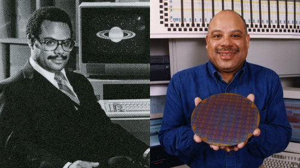
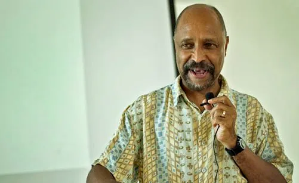
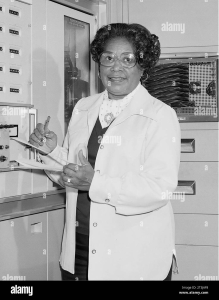
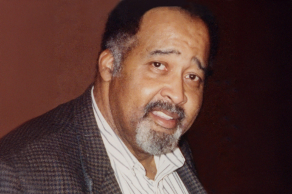

Contributions to Computer Science
Black innovators have made significant contributions to the field of computer science, shaping hardware, software, and cybersecurity advancements. Many of these inventions have become essential to everyday technology, though not all inventors received the recognition they deserved.
Mark Dean: Hardware Innovations
Mark Dean played a key role in the development of the personal computer and co-invented the color PC monitor. He also helped create the ISA bus, a crucial component in computer architecture otherwise known as a Motherboard.
Clarence Ellis: Software & Programming
Clarence "Skip" Ellis was the first African American to earn a Ph.D. in computer science and contributed to the development of office automation software that paved the way for collaborative computing.
Gladys West: Algorithms & Early GPS Data
Gladys Mae West was a mathematician whose calculations were fundamental to the development of the Global Positioning System (GPS). Her work involved complex algorithms to account for the Earth's precise shape, which is essential for accurate GPS data.
Jerry Lawson: Video Game Software & Hardware Development
Jerry Lawson was a pioneer in the video game industry. He is best known for designing the Fairchild Channel F, the first home video game console to use interchangeable ROM cartridges.